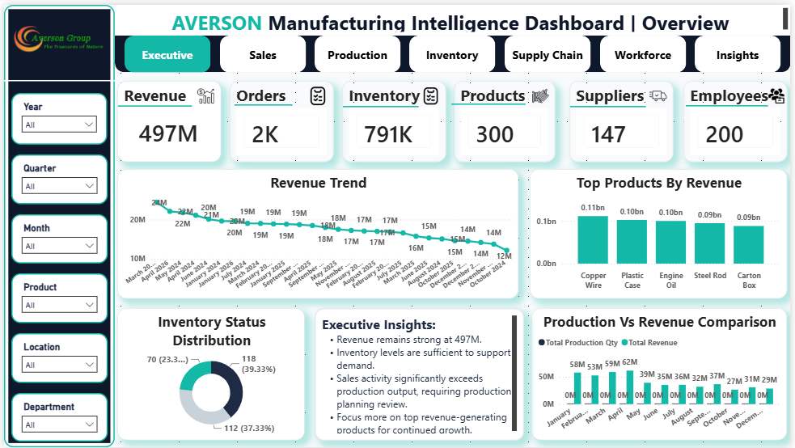
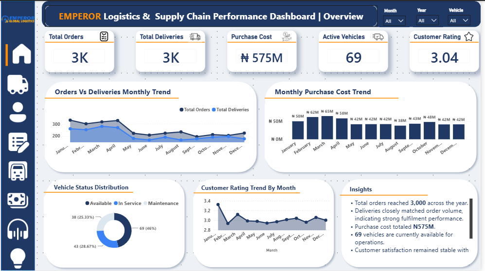
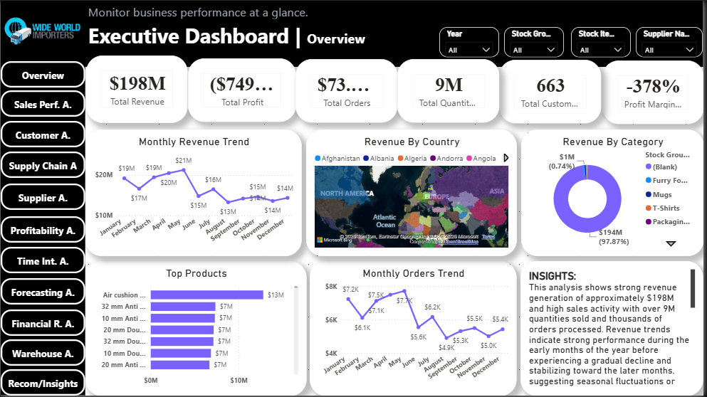
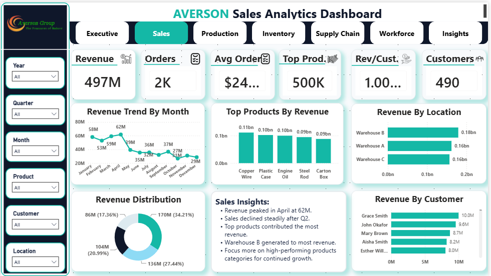
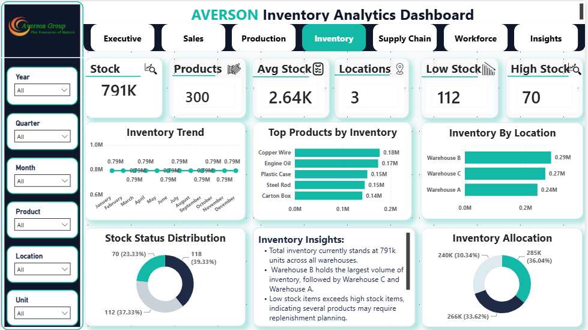
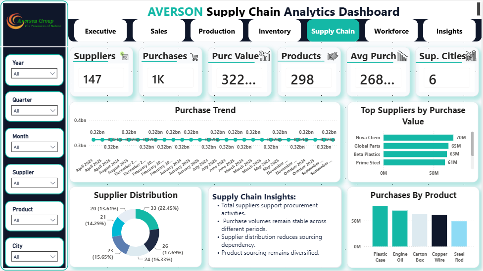

Hello, I'm
I transform raw data into actionable business insights through interactive dashboards, KPI reporting, SQL analytics, and modern Business Intelligence solutions.
I'm Adaku Bridget Nwaolisa, a Data Analyst and Business Intelligence professional passionate about transforming raw data into meaningful insights that support strategic business decisions.
With a background in Accounting, Logistics Operations, and Business Intelligence, I specialize in Power BI, SQL, Excel, DAX, and Power Query. I enjoy designing interactive dashboards, building KPIs, cleaning data, and uncovering trends that improve business performance.
Beyond data analytics, I am expanding my expertise in Full Stack Web Development, enabling me to build modern business applications and data-driven solutions from end to end.
Business Dashboards
KPIs Built
Business Domains
Passion for Data
Technologies and tools I use to transform business data into actionable insights.
Interactive dashboards, KPI development, DAX, Power Query and executive reporting.
Writing optimized queries, joins, filtering, aggregations and data analysis.
Advanced Excel, Pivot Tables, Lookup Functions, Charts and Business Reporting.
Data transformation, calculated columns, measures and business modelling.
HTML5, CSS3, JavaScript, PHP and MySQL for modern web applications.
Turning complex business data into actionable insights for decision-making.
A showcase of business intelligence dashboards and analytics solutions designed to solve real-world business problems.

Designed and developed a comprehensive Manufacturing Intelligence Dashboard using Power BI, DAX, SQL, Excel and Power Query. The solution delivers real-time insights into production, sales, inventory, workforce performance and supply chain operations, enabling faster, data-driven business decisions.

Designed and developed an end-to-end Supply Chain and Logistics Analytics Dashboard using Power BI, DAX, Excel and Power Query. The solution delivers actionable insights across orders, deliveries, procurement, inventory, fleet operations, finance, customer service and returns, enabling data-driven operational and strategic decision-making.

Designed and developed an end-to-end Business Intelligence and Advanced Analytics solution using SQL, Power BI, DAX, Excel and Power Query. The project transforms Wide World Importers operational data into executive dashboards covering sales performance, customer analytics, supply chain, supplier analysis, profitability, forecasting, financial reporting, warehouse operations and strategic business recommendations.
Additional business intelligence dashboards developed using Power BI, SQL, Excel and DAX.

Interactive dashboard for monitoring revenue, sales trends, customer performance and profitability.

Dashboard for monitoring inventory turnover, stock levels and warehouse performance.

Dashboard for monitoring supplier performance, procurement efficiency, logistics operations, and overall supply chain performance.
Download my latest ATS-friendly resume highlighting my experience in Business Intelligence, Data Analytics and Web Development.
Microsoft Power BI • SQL • Excel • DAX • Power Query • HTML • CSS • JavaScript • PHP • MySQL
I'm currently open to Data Analyst, Business Intelligence, and Power BI opportunities. Whether you have a project, collaboration, or full-time role, I'd love to hear from you.
I'm always interested in discussing data analytics, business intelligence, Power BI dashboards, freelance projects and exciting career opportunities. Feel free to reach out.
Lagos, Nigeria